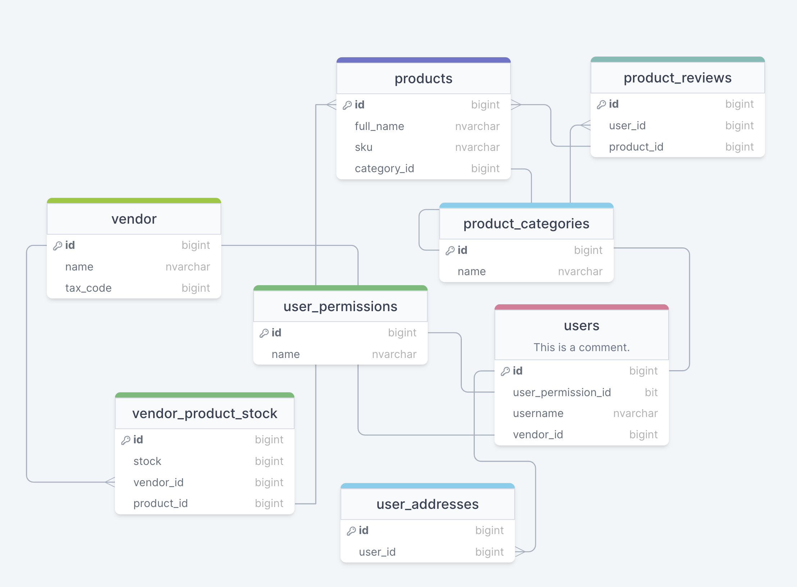
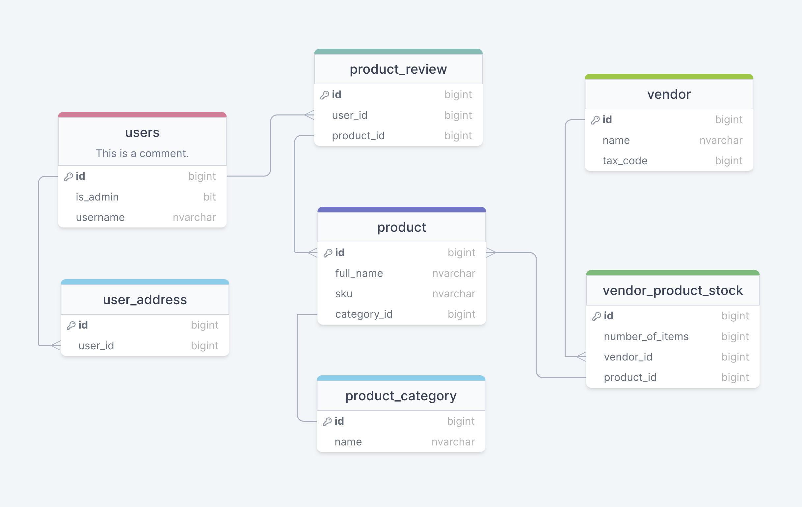

First, when creating a new application, should you start off with a microservice architecture? Well, the prevailing wisdom is no, because there is significant cost associated with maintaining, deploying, hosting., multiple microservices.
Let’s also look at some microservice tenets:
- Microservices need to own their own data, which means you need a database for each.
- Instead of synchronous communication, you usually use message based communication to ensure decoupling.
So what does this mean?
- We lose FK constraints, and data integrity related to them.
- Joins across data sources can be tricky.
- Distributed transactions can also be tricky.
- We lose some data normalization (for example, catalog data will probably have to be replicated).
What is the alternative? Well, writing a monolith. Monoliths in themselves aren’t bad—actually, the term monolith refers to a unit of deployment. In fact, most APIs are monoliths. Moreover, you can even have a distributed monolith because if the dependencies between microservices are as such that you need to deploy multiple of them at the same time. The only potential problem arises if, at some later point, we want to move to a microservice architecture, those FK constraints will pose a problem. What would be a possible approach? Create a monolith with predefined modules and enforce strict domain boundaries.
DDD
Which is where Domain Driven Design comes to play.
DDD is a software development approach that focuses on modeling software to align closely with the business domain it represents. It emphasizes a deep understanding of the domain, collaboration between domain experts and developers, and the creation of a shared language to bridge the gap between them. DDD has a few core concepts, but I find two of them to be of crucial importance: ubiquitous language (using shared understanding of the domain’s terminology and concepts among developers and domain experts) and bounded contexts (dividing the domain into smaller, manageable subdomains with well-defined boundaries).
So what is the goal?
Well, maybe we can do a modular monolith application in which the modules are already predecoupled, so if we ever want to pull some of them out as separate units of deployment, we can do so easily.
A Case Study
Let’s define a set of spec for an application.
We want to build an online shopping platform where multiple vendors can sell products. Multiple venders can sell the same product (defined by SKU).
Well start by defining a set of entities:
- Product
- ProductCategory
- User
- UserAddress
- ProductReview
- UserAddress
- Vendor
Let’s try to sketch a database schema.
OK, that was the first draft. Now, let’s do a mental exercise. Let’s think what would be needed in order to break this monolith. We would need to identify a set of domain boundaries, which would correspond to the individual microservices. We won’t actually create microservices, but we will look at what we need to do for our code to be splittable.
As we see, we have created groups of related objects. The would correspond to individual modules / microservices.
- Logging in.
- Search and product details.
- Payment.
- Catalog.
In order to separate them into separate modules, we would need to remove the FK constraints. Of course, the question becomes then, how would they communicate. My approach is to use unique domain properties such as the user id, or some company tax code. This is what we will do here.
One idea to achieve coupling is to break the monolith.
Some Thoughts On Module Communication
Decoupling your data model won’t achive anything if individual services in your app are coupled (call one another directly). We know that in the microservice world, direct calls are a no-no. So in order for our microservices to be decoupled, we would need to also decouple our service layer, not just data layer.
One approach to communication would be to use a message bus. Since your client application will probably make use of push notifications, you’ll use messeging anyway, in conjuction with module communication. This is called coreography. The other approach is to use orhestration, which is usually done on the client, because as I’ve mentioned, we want to avoid direct synchronous calls between microservices.
Let’s assume we have a Payment service, and it needs to synchronize with the Catalog service. Let’s use some code:
- When the user initiates a payment, the product needs to be reserved in the Catalog service.
- This will in turn send a message acknowledging that the product is indeed reserved, so that if another customer tries to place an order, it will manage the stock levels appropriately.
- Once this worked, payment processing will begin.
- If payment succeeds, another message will be sent to the Catalog service, and stocks will be decreased by one.
- Otherwise, the reserved status will be removed.
The client can also do orchestration and call these steps in order, but this isn’t recommended for business logic flows, especially not for business flows.